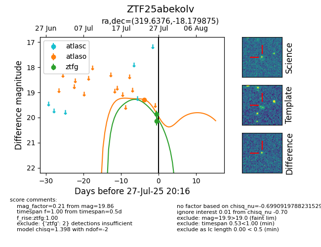

Target ZTF25abekolv at 2025-07-27 20:16, see:
FINK: fink-portal.org/ZTF25abekolv
Lasair: lasair-ztf.lsst.ac.uk/objects/ZTF25abekolv
ALeRCE: alerce.online/object/ZTF25abekolv
alt names
ZTF25abekolv (ztf,fink)
coordinates:
equatorial (ra, dec) = (319.6376,-18.17987)
galactic (l, b) = (31.5544,-40.43015)
photometry
last atlaso=19.29, ztfg=19.86
1 atlaso, 2 ztfg detections
